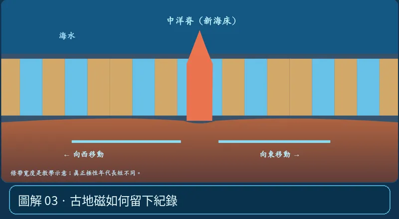

第 04 單元｜圖解 3/6｜課本 p.77–80
古地磁如何留下紀錄
玄武岩冷卻時，含鐵礦物記錄當時地磁方向；地磁多次反轉，形成正磁／反磁交錯的條帶。兩側鏡像式對稱是擴張重要證據。
① 看一眼② 操作圖③ 自己推理④ 揭開解答
🔬 這張圖，請自己動手試
操作圖上方的頁籤、滑桿或按鈕；圖片也能左右滑動放大觀看。
互動圖解 · 古地磁如何留下紀錄

原創 SVG 地科教學模型，方便理解，非真實比例、非即時地震資料；互動無法載入時仍有靜態圖。
STEP 01 · 先觀察
👀 眼睛先找線索
找顏色交錯的條帶，想像磁場每隔一段時間反轉，凝固的玄武岩會記錄當時磁場方向。
💡 為什麼是這樣？
地磁正、反轉紀錄會在脊軸兩側呈大致鏡像對稱；配合測年的海床年齡是海底擴張的重要證據。
🎯 換個問法想一題
磁條帶左右對稱，通常支持哪一個機制？
我想好了，點開看答案 ↓
支持海底由中洋脊向兩側擴張。
⚡ 一句記住：地球磁場曾倒過來